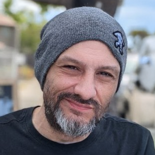
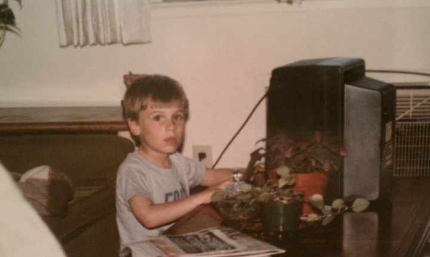
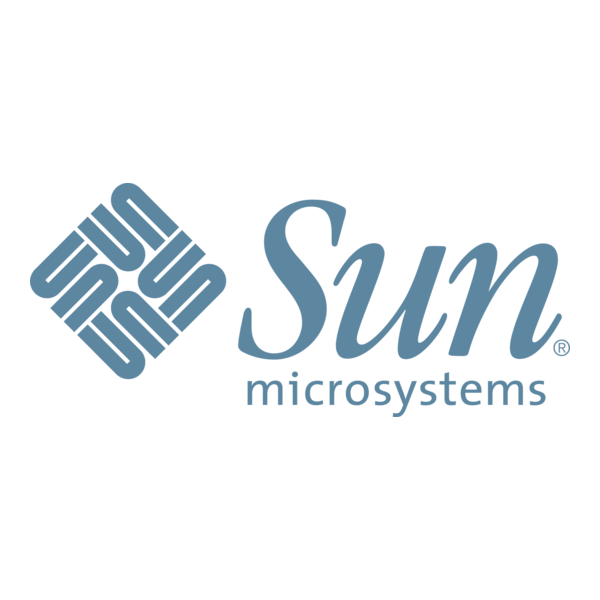
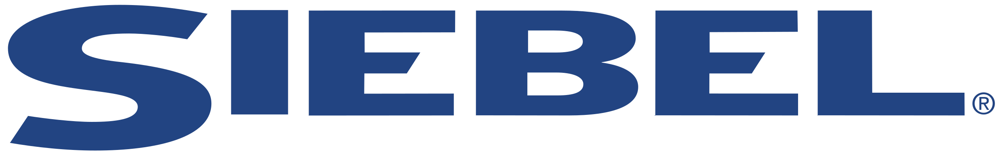

Hello, I'm
From failing to graduate high school to a 30+ year path through the tech industry, I'm taking a look back at the journey.

My face has been glued to screens since the 80's

My fascination with technology began in the 80's with the Commodore 64 and a Vectrex. While captivated by the games, my interest in technology deepened quickly.
When I was 18 (1995), I failed to graduate high school and moved to the Bay Area to work for a company called Sun Microsystems. My dad worked there and said they were hiring for Desktop Manufacturing (with no diploma needed!).
There was a buzz when I arrived about an upcoming product called "Java". The manufacturing building had large purple signs for it everywhere you looked. Java was released the next year and I was eventually moved to Server Manufacturing, a job I really enjoyed.
This early exposure to technology, and others passionate about it, put a drive in me when I went to Xerox and then Siebel Systems. I joined Siebel during their "Fastest Growing Company in America" period, working in IT and then Engineering - an incredible experience, and I have never worked as hard since.
My interest in web design was sparked during my time at Siebel where I would regularly visit the massive web team operating the large and internation Siebel Systems websites. When I was not working, I was up every night learning Photoshop and HTML.
I left Siebel before the bubble burst, moving to San Luis Obispo and focusing all efforts on learning more web design and development. This journey culminated in 2005 with the founding of our company LIFTOFF Digital, where I currently serve as CEO/Owner. In 2020 my wife and I moved to Eugene, Oregon.
Exploring Technology

Fresh out of high school, I began here building and testing SPARCstation desktop units.
Later I switched to Server Manufacturing where I built entire server racks (Enterprise 5000's, among others), installing rails, power, fiber cabling, and of course the various servers and storage units that would be placed into rails within.

At Siebel systems I initially worked IT at headquarters, assisting in the setup and deployment of laptops for onsite staff.
I would eventually move into QA Engineering where I helped managed servers in the various datacenters onsite.
I even met Tom Siebel in his office on one occassion!
During this period, I was living in Photoshop, creating websites for friends and family - my uncles real estate business being my very first paying job in web development.
It was also during this period I began to explore SEO.
TechXpress was the first company I worked for creating web designs, and eventually moving into front-end development.
It was during this time that my hobby of SEO (Search Engine Optimization) became part of my job as well, where I created the SEO process we turned into a product.
Since my partner of 14 years left to start something new in 2019, I've been running LIFTOFF as the CEO and Owner overseeing a diverse clientbase and an amazing staff.
LIFTOFF has serviced small to medium sized business since 2005.
Most of that time we were based in San Luis Obispo, California, until COVID began when we went fully remote.